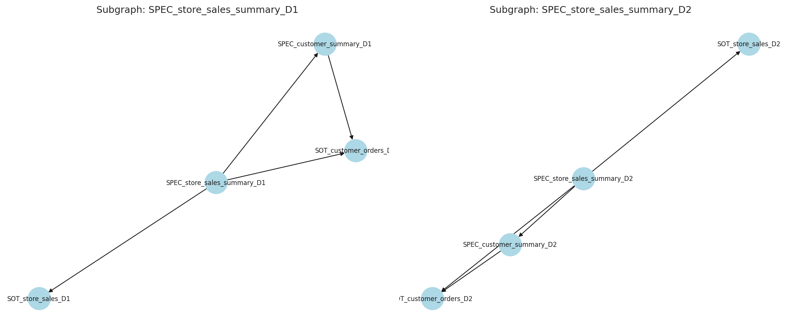
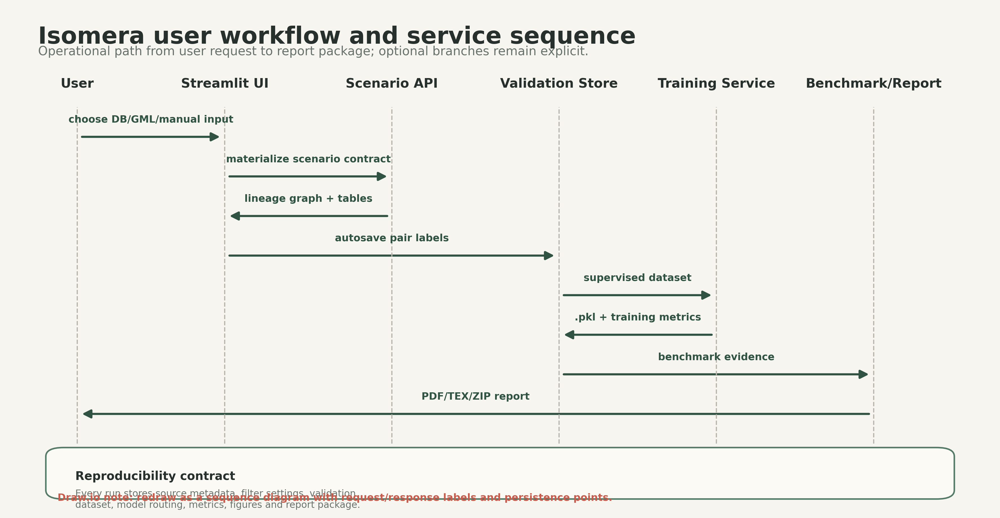
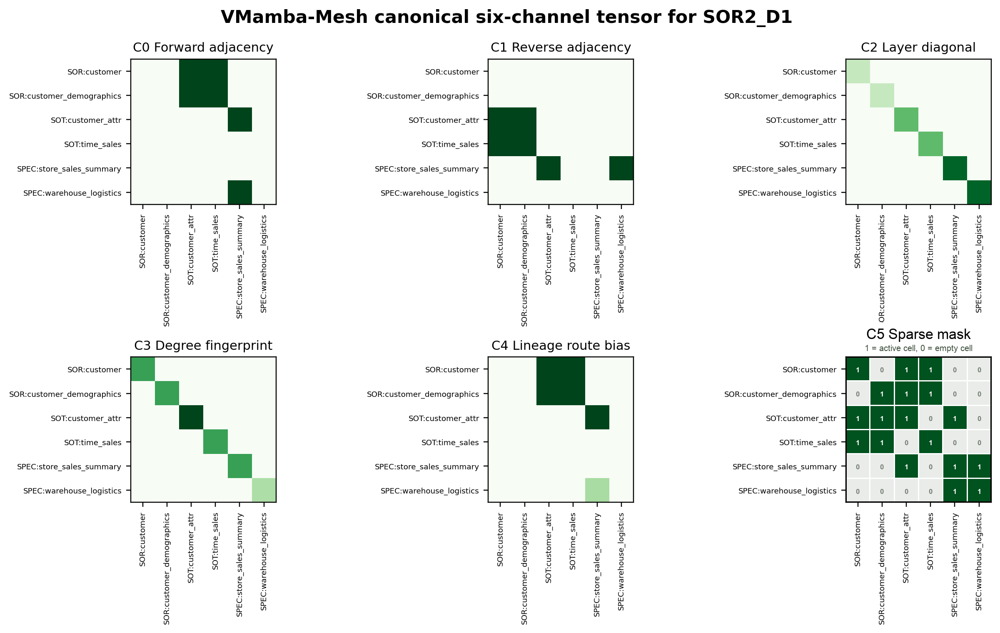
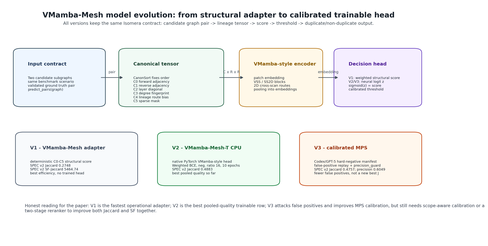

Isomera e VMamba-Mesh: detecção reprodutível de tabelas duplicadas
O problema é identificar duplicidade estrutural em Data Mesh: tabelas diferentes podem ter nomes distintos, mas repetir a mesma função de linhagem.
O Isomera conecta ao banco, materializa grafos, gera matrizes/tensores e executa benchmarks com rastreabilidade.

Da formalização ao Article IV
Versão 1
Formalização de redundância estrutural como problema de grafos e isomorfismo.
Versão 2
GNN/GIN para classificar pares, com treinamento supervisionado e benchmarks iniciais.
Versão 3
Isomera v2: conexão com banco, geração de benchs, validação com LLM, relatórios e reprodutibilidade.

Benchmarks e ground truth
SPEC v2
Foco em produtos semânticos finais. É mais limpo para avaliar duplicidade em tabelas finais e foi onde o VMamba-Mesh teve ganho mais estável.
Full Lineage
Mistura SOR, SOT e SPEC. É mais amplo e gera mais negativos plausíveis, por isso o IC de qualidade é mais difícil de estabilizar.
Do grafo ao tensor C0-C5
O VMamba original trabalha com imagens. O VMamba-Mesh transforma subgrafos de linhagem em tensores canônicos.
- CanonSort: fixa ordem dos nós.
- DiagFP: usa a diagonal para camada e grau.
- MeshSS2D: adapta cross-scan para rotas SOR-SOT-SPEC.
- SparseGate: reduz peso de células vazias.

V1, V2 e V3

Todos os modelos testados no SPEC v2
| Modelo | Protocolo | Jaccard | ET | SF-Jaccard | Acc. | Prec. | Recall | TP/FP/FN |
|---|---|---|---|---|---|---|---|---|
| VF2 | deterministic graph matcher | 0.1842 | 0.0218 | 546.68 | 0.4618 | 0.2185 | 0.5399 | 291/1041/248 |
| Node Match | node-label matcher | 0.0000 | 0.0151 | 0.00 | 0.7749 | 0.0000 | 0.0000 | 0/0/539 |
| GNN TPC-DS v1 | historical GNN | 0.1128 | 0.0118 | 333.64 | 0.6685 | 0.2210 | 0.1874 | 101/356/438 |
| GNN GenAI v2 WBCE | GNN loss reweighting | 0.2184 | 0.0111 | 1348.31 | 0.3754 | 0.2331 | 0.7755 | 418/1375/121 |
| GNN GenAI v2 hardneg | GNN hard negatives | 0.0092 | 0.0109 | 271.84 | 0.7758 | 0.6250 | 0.0093 | 5/3/534 |
| V1 VMamba | C0-C1 adapter | 0.2555 | 0.0060 | 5076.80 | 0.5378 | 0.2861 | 0.7050 | 380/948/159 |
| V1 VMamba-Mesh | C0-C5 adapter | 0.2748 | 0.0060 | 5464.74 | 0.5879 | 0.3127 | 0.6939 | 374/822/165 |
| V2 VMamba-T CPU | trainable C0-C1 | 0.4815 | 0.1583 | 200.58 | 0.8188 | 0.5749 | 0.7477 | 403/298/136 |
| V2 VMamba-Mesh-T CPU | trainable C0-C5 | 0.4883 | 0.1679 | 202.39 | 0.8088 | 0.5511 | 0.8108 | 437/356/102 |
| V3 VMamba-T MPS | LLM manifest + calibration | 0.3926 | 0.0968 | 345.75 | 0.7603 | 0.4775 | 0.6883 | 371/406/168 |
| V3 VMamba-Mesh-T MPS | LLM manifest + calibration | 0.4757 | 0.0871 | 419.32 | 0.8288 | 0.6049 | 0.6902 | 372/243/167 |
Colunas em negrito mostram o melhor por indicador. ET menor é melhor; demais métricas maiores são melhores.
Jaccard e SF-Jaccard contam histórias diferentes


O que mostrar na ferramenta
- Mostrar grafo, matriz de adjacência e canais.
- Mostrar seletor de modelo e hiperparâmetros.
- Mostrar Benchmark & Examples -> Article Reproducibility.
- Mostrar Research Reports com CSV, figuras, manifest e trace.
Conclusão rigorosa
Article IV fecha a história com três papéis: V1 para eficiência, V2 para qualidade neural e V3 para calibração MPS.
Próximo passo natural para o Article V: híbrido VMamba-Mesh + GNN, com gate rápido de alta revocação e VMamba-Mesh-T como reranker dos pares plausíveis.